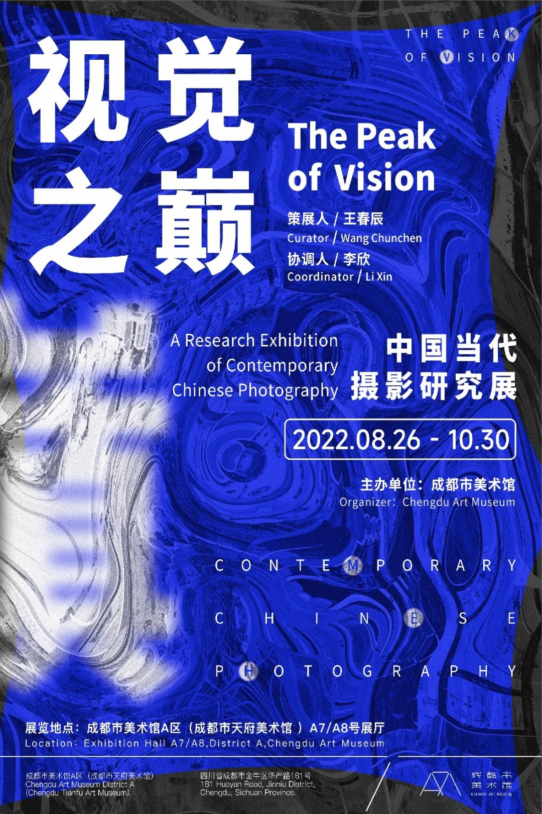

Exhibtions in Chengdu

After talking with those exhibition lovers whose work or profession is related to art, I learned that they have a strong demand for exhibition information, and at present, they get information from very many scattered platforms, and it is easy to miss their favorite content.
Therefore, the purpose of this platform is to give the majority of exhibition lovers a comprehensive information channel 1)with basic information of providing time, place, and intro for the exhibitions. After becoming members, users can 2)favorite the exhibitions they want to see and 3) publish some of their views and thoughts on the exhibitions.
In addition, the website opens a separate channel for information submission, in order to let some niche exhibitions get more exposure, so all private/niche exhibition holders/authors are warmly welcomed to share information about thir exhibitions.
A usability test is conducted in the logic of basic usage, from just browsing the information, and then getting some details and favoriting some they like, contributing some content to the community and website. Users in the test are encouraged to complete the tasks above in their own ways.